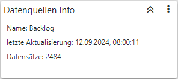
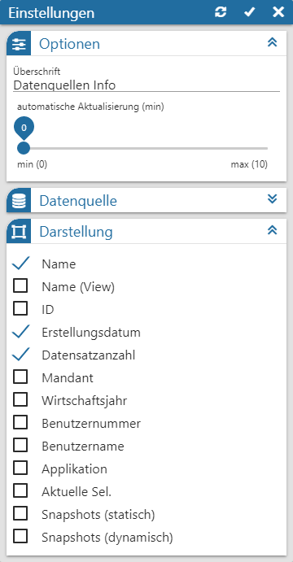
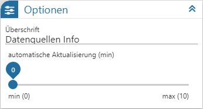
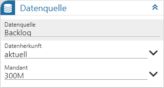
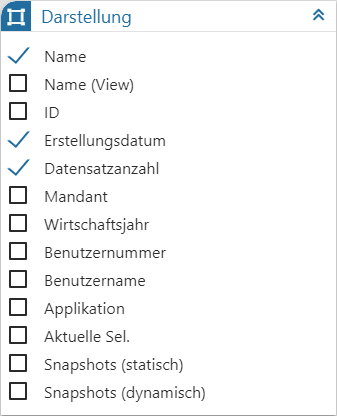

Power Report - Widgets - Datenquellen Info

In der "Datenquellen Info" werden Informationen über die aktuelle Datenquelle angezeigt. Mit Hilfe der Einstellungen können die angezeigten Informationen definiert werden.
Einstellungen

Folgende Eingabefelder, Einstellungen und Informationen stehen zur Verfügung:
Optionen

Ø Überschrift
An dieser Stelle wird die Bezeichnung der Datenquellen Info definiert.
Ø automatische Aktualisierung (min)
An dieser Stelle kann definiert werden, ob sich der Inhalt der Info automatisch aktualisieren soll. Mit der Einstellung "0" findet keine Aktualisierung statt.
Datenquelle

Ø Datenquelle
Dieses Informationsfeld zeigt den Namen der zu Grunde liegenden Datenquelle an.
Ø Datenherkunft
An dieser Stelle kann mit Hilfe einer Auswahlliste definiert werden, aus welchem Bereich der Datenquelle die Daten des Widgets stammen sollen. Die Auswahl "aktuell" steht immer zur Verfügung und spiegelt die im Ausgangsfenster gewählte Datenquelle (temporäre Datenquelle, Snapshot, View oder MasterView) wieder.
Hinweis
Gibt es für die Datenquelle mehrere Snapshots, so sind diese über den Eintrag "xxx (statisch)" (xxx => Name der Auswertung) zusammengefasst. Innerhalb der Snapshots erfolgt die weitere Selektion über den Widget Filter.
Ø Mandant
Mit Hilfe einer Auswahlliste kann definiert werden, von welchem Mandanten die Info ausgegeben werden soll. Grundvoraussetzung hierfür ist, dass in anderen Mandanten die Ausgangsdatenquelle ebenfalls erzeugt wurde.
Darstellung

Ø Anzeige
Durch die Einstellungen "Name" bis "Snapshots (dynamisch)" kann definiert werden, welche Informationen in dem Widget ausgegeben werden sollen.
Hinweis
Bei Snapshots mit der Kennung "Temporär" (interne Kennung "FBA6F8A7-02F4-42F9-B094-19639EA64701" für Selektion 1 und Selektion 2) handelt es sich um temporäre Datenquellen. Diese werden automatisch erzeugt, wenn eine Ausgabe ohne Datenquelle erfolgt und können in der "Datenquellenverwaltung" gelöscht werden. Eine Nutzung von temporären Datenquellen für Snapshot-Vergleiche ist nicht möglich!
Buttons

Ø Aktualisierung
Mit Hilfe dieses Buttons werden die Einstellungen gespeichert, direkt angewendet und das Einstellungsfenster bleibt geöffnet.
Ø Ok
Durch Anwahl des Buttons "Ok" werden die Änderungen angewendet und das Fenster geschlossen.
Ø Ende
Durch Anwahl des Buttons "Ende" wird das Einstellungsfenster geschlossen und nicht gespeicherte Änderungen verworfen.